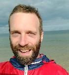

Kevin Stowe

Potential Students
My thesis topics generally pertain to generation of creative language (metaphor/humor/etc) or NLP for Social Good. If you're interested in these topics or have something in mind, please contact thesis@ukp.informatik.tu-darmstadt.de. My availibility is sometimes limited, but I'm always interested in talking with BA/MA students at TU Darmstadt to discuss potential theses.
Current Students
- Kea Busemann (BS): Evaluating Metaphor Generation
- Elena Leidinger (MS): Creativity in Dialogue Generation
- Nils Beck (BS): Towards Controlled Metaphor Generation
Past Students
- Ruslan Sandler (BS): Deep Learning Approaches to Humor Generation
- Tobias Blei (BS): Style Transfor for Creative Language
Courses
2020
- (online) Text Analytics for Social Good seminar. Covering applications of AI for social good, as well as ethical and policy implications.
- Project manager for a Data Analysis Software Project (DASP), building data/collection annotation and yielding a presentation at the AAAI Symposium Series